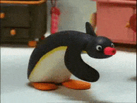

Popover API - JS Example
HTML syntax and JS API facilitating popovers such as overlays, popups, menus etc.
Using the Popover APIJavascript toogle - Press 'p'

<h2>Javascript toogle - Press 'p'</h2>
<div id="popover" popover>
<img width="200px" src="./../images/dancing-pingu.gif">
</div>
<script>
const popover = document.getElementById("popover");
document.addEventListener("keydown", (event) => {
if (event.key === "p") {
popover.togglePopover();
}
});
</script>